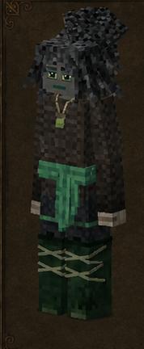
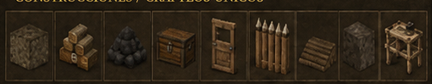

Guardabosques
Forester · código oficial
forester · ficha 08/16
Rasgos: 8
Bonus: 13
Malus: 7
Recetas: 121

Resumen humano
infraestructura de madera/combustible. Pega más, pero recibe más daño.
Esta línea es interpretación funcional breve; lo importante son los números y recetas de abajo.
Bonus objetivos
- ahorro de durabilidad de hacha: **+75%** (valor interno `0.75`)
- ahorro de durabilidad de sierra: **+75%** (valor interno `0.75`)
- ahorro de durabilidad de tijeras: **+75%** (valor interno `0.75`)
- daño cuerpo a cuerpo: **+30%** (valor interno `0.3`)
- drop de carbón vegetal: **+100%** (valor interno `1`)
- drop de semillas/brotes de árbol: **+300%** (valor interno `3`)
- drop de troncos: **+50%** (valor interno `0.5`)
- drop de turba: **+100%** (valor interno `1`)
- probabilidad de resina desde troncos: **+2%** (valor interno `0.02`)
- probabilidad de restos vegetales desde hojas: **+5%** (valor interno `0.05`)
- velocidad al caminar: **+5%** (valor interno `0.05`)
- velocidad al trabajar madera: **+100%** (valor interno `1`)
- velocidad con hojas: **+100%** (valor interno `1`)
Malus objetivos
- daño recibido global: **+10%** (valor interno `0.1`)
- drop de mineral: **-10%** (valor interno `-0.1`)
- pérdida de estabilidad temporal: **+25%** (valor interno `0.25`)
- saciedad de lácteos: **-10%** (valor interno `-0.1`)
- saciedad de proteína/carne: **-10%** (valor interno `-0.1`)
- velocidad al picar mineral: **-10%** (valor interno `-0.1`)
- velocidad al picar piedra: **-10%** (valor interno `-0.1`)
Rasgos oficiales y efectos reales
| Rasgo | Tipo | Datos objetivos |
|---|---|---|
Bárbaroberserker | positivo | velocidad al caminar: +5% (interno 0.05)daño cuerpo a cuerpo: +30% (interno 0.3)daño recibido global: +10% (interno 0.1) |
Guardabosquesforester | positivo | sin atributos numéricos en traits.json; desbloqueo/rasgo de receta |
Carbonerocollier | positivo | drop de carbón vegetal: +100% (interno 1)drop de turba: +100% (interno 1) |
Leñadorlumberjack | positivo | velocidad al trabajar madera: +100% (interno 1)velocidad con hojas: +100% (interno 1)ahorro de durabilidad de hacha: +75% (interno 0.75)ahorro de durabilidad de tijeras: +75% (interno 0.75)ahorro de durabilidad de sierra: +75% (interno 0.75)probabilidad de restos vegetales desde hojas: +5% (interno 0.05) |
Técnico de Viverosnurseryworker | positivo | drop de semillas/brotes de árbol: +300% (interno 3) |
Carpinterocarpenter | positivo | drop de troncos: +50% (interno 0.5)probabilidad de resina desde troncos: +2% (interno 0.02) |
Delicadodelicate | negativo | drop de mineral: -10% (interno -0.1)velocidad al picar mineral: -10% (interno -0.1)velocidad al picar piedra: -10% (interno -0.1)pérdida de estabilidad temporal: +25% (interno 0.25) |
Herbívoroherbivorous | negativo | saciedad de proteína/carne: -10% (interno -0.1)saciedad de lácteos: -10% (interno -0.1) |
Recetas / desbloqueos
62mesa normal
55estación
4compatibilidad
121salidas listadas
Categorías detectadas
Mesa de tallado de madera: 53Empalizadas y defensas de madera: 10Envejecido de madera: 10Madera y carpintería: 9Combustibles: 8Puertas: 7Tejados y piezas de cubierta: 7Procesado de madera: 6Camas: 2Mesa de germinación: 2Toolsmith: mangos de herramienta: 2Toolsmith Fork: mangos de herramienta: 2Cofres y almacenamiento: 1Hojas: 1Plantones de árbol: 1
Ver salidas exactas de recetas de esta clase (121)
| Modo | Categoría legible | Resultado legible | Nombre ES |
|---|---|---|---|
| mesa de crafteo normal | Camas | Bed woodaged casco norte ×1 | — |
| mesa de crafteo normal | Camas | Bed village casco norte ×1 | — |
| mesa de crafteo normal | Cofres y almacenamiento | Chest este ×1 | — |
| mesa de crafteo normal | Puertas | Door ruined rough1 ×1 | — |
| mesa de crafteo normal | Puertas | Door ruined rough2 ×1 | — |
| mesa de crafteo normal | Puertas | Door ruined rough3 ×1 | — |
| mesa de crafteo normal | Puertas | Door ruined windowed1 ×1 | — |
| mesa de crafteo normal | Puertas | Door ruined windowed2 ×1 | — |
| mesa de crafteo normal | Puertas | Door ruined windowed3 ×1 | — |
| mesa de crafteo normal | Puertas | Door sleek windowed Madera y carpintería ×1 | — |
| mesa de crafteo normal | Combustibles | Firewood ×16 | — |
| mesa de crafteo normal | Combustibles | Firewood ×12 | — |
| mesa de crafteo normal | Combustibles | Firewood ×16 | — |
| mesa de crafteo normal | Combustibles | Agedfirewood ×16 | — |
| mesa de crafteo normal | Combustibles | Firewood treated ×1 | — |
| mesa de crafteo normal | Combustibles | Coal contaminated ×4 | — |
| mesa de crafteo normal | Combustibles | Charcoal ×8 | — |
| mesa de crafteo normal | Combustibles | Briquette ×4 | — |
| mesa de crafteo normal | Hojas | Leaves colocado Madera y carpintería ×4 | — |
| mesa de crafteo normal | Empalizadas y defensas de madera | Palisadewall cuádruple lower cornerin oeste ×8 | — |
| mesa de crafteo normal | Empalizadas y defensas de madera | Palisadewall three height wall oeste ×1 | — |
| mesa de crafteo normal | Empalizadas y defensas de madera | Palisadewall cuádruple height wall oeste ×1 | — |
| mesa de crafteo normal | Empalizadas y defensas de madera | Palisadewall cuádruple height cornerout oeste ×1 | — |
| mesa de crafteo normal | Empalizadas y defensas de madera | Palisadewall cuádruple parte superior type oeste ×1 | — |
| mesa de crafteo normal | Empalizadas y defensas de madera | Palisadewall cuádruple halftop type oeste ×1 | — |
| mesa de crafteo normal | Empalizadas y defensas de madera | Palisadewall three parte superior type oeste ×1 | — |
| mesa de crafteo normal | Empalizadas y defensas de madera | Palisadewall three halftop type oeste ×1 | — |
| mesa de crafteo normal | Empalizadas y defensas de madera | Palisadewall amount toproped wall oeste ×8 | — |
| mesa de crafteo normal | Empalizadas y defensas de madera | Palisadewall cuádruple lowerspiked wall oeste ×1 | — |
| mesa de crafteo normal | Tejados y piezas de cubierta | Tejado inclinado Madera y carpintería este libre ×4 | — |
| mesa de crafteo normal | Tejados y piezas de cubierta | Cumbrera de tejado Madera y carpintería norte-sur libre ×4 | — |
| mesa de crafteo normal | Tejados y piezas de cubierta | Punta de tejado Madera y carpintería libre ×4 | — |
| mesa de crafteo normal | Tejados y piezas de cubierta | Esquina interior de tejado Madera y carpintería este libre ×4 | — |
| mesa de crafteo normal | Tejados y piezas de cubierta | Esquina exterior de tejado Madera y carpintería este libre ×4 | — |
| mesa de crafteo normal | Tejados y piezas de cubierta | Beam ridge Madera y carpintería libre ×16 | — |
| mesa de crafteo normal | Tejados y piezas de cubierta | Beam plane Madera y carpintería libre ×16 | — |
| mesa de crafteo normal | Plantones de árbol | Sapling Madera y carpintería libre ×1 | — |
| mesa de crafteo normal | Madera y carpintería | Carvedlog acacia envejecido bottom liso vertical ×1 | — |
| mesa de crafteo normal | Madera y carpintería | Carvedlog acacia envejecido parte superior fancy vertical ×1 | — |
| mesa de crafteo normal | Madera y carpintería | Carvedlog acacia envejecido middle fancy vertical ×1 | — |
| mesa de crafteo normal | Madera y carpintería | Carvedlog acacia envejecido bottom fancy vertical ×1 | — |
| mesa de crafteo normal | Madera y carpintería | Carvedlog acacia envejecido middle liso vertical ×1 | — |
| mesa de crafteo normal | Madera y carpintería | Carvedlog acacia envejecido parte superior liso vertical ×1 | — |
| mesa de crafteo normal | Madera y carpintería | Objeto decorativo de ruinas ×1 | — |
| mesa de crafteo normal | Madera y carpintería | Objeto decorativo de ruinas ×16 | — |
| mesa de crafteo normal | Madera y carpintería | Viga de soporte Madera y carpintería ×16 | — |
| mesa de crafteo normal | Envejecido de madera | Carvedlog acacia envejecido bottom liso vertical ×1 | — |
| mesa de crafteo normal | Envejecido de madera | Carvedlog acacia envejecido middle liso vertical ×1 | — |
| mesa de crafteo normal | Envejecido de madera | Carvedlog acacia envejecido parte superior liso vertical ×1 | — |
| mesa de crafteo normal | Envejecido de madera | Carvedlog acacia envejecido part fancy vertical ×1 | — |
| mesa de crafteo normal | Envejecido de madera | Tablones ébano envejecido vertical ×8 | — |
| mesa de crafteo normal | Envejecido de madera | Tablones ébano podrido vertical ×8 | — |
| mesa de crafteo normal | Envejecido de madera | Tronco colocado envejecido vertical ×8 | — |
| mesa de crafteo normal | Envejecido de madera | Tronco sin corteza muy envejecido vertical ×8 | — |
| mesa de crafteo normal | Envejecido de madera | Tronco sin corteza podrido vertical ×8 | — |
| mesa de crafteo normal | Envejecido de madera | Tronco sin corteza muy podrido vertical ×8 | — |
| mesa de crafteo normal | Procesado de madera | Plank Madera y carpintería ×4 | — |
| mesa de crafteo normal | Procesado de madera | Plank Madera y carpintería ×16 | — |
| mesa de crafteo normal | Procesado de madera | Plank Madera y carpintería ×4 | — |
| mesa de crafteo normal | Procesado de madera | Plank Madera y carpintería ×16 | — |
| mesa de crafteo normal | Procesado de madera | Stick ×1 | — |
| mesa de crafteo normal | Procesado de madera | Stick ×1 | — |
| estación especial | Mesa de germinación | Sapling Madera y carpintería libre ×1 | — |
| estación especial | Mesa de germinación | Sapling Madera y carpintería libre ×1 | — |
| estación especial | Mesa de tallado de madera | Tronco colocado envejecido vertical ×1 | — |
| estación especial | Mesa de tallado de madera | Firewood ×8 | — |
| estación especial | Mesa de tallado de madera | Agedfirewood ×8 | — |
| estación especial | Mesa de tallado de madera | Stick ×64 | — |
| estación especial | Mesa de tallado de madera | Plank Madera y carpintería ×16 | — |
| estación especial | Mesa de tallado de madera | Logquad colocado Madera y carpintería vertical ×1 | — |
| estación especial | Mesa de tallado de madera | Logquad barkedcorner Madera y carpintería norte ×1 | — |
| estación especial | Mesa de tallado de madera | Logquad debarked Madera y carpintería vertical ×1 | — |
| estación especial | Mesa de tallado de madera | Logquad debarkedcorner Madera y carpintería norte ×1 | — |
| estación especial | Mesa de tallado de madera | Tronco sin corteza Madera y carpintería vertical ×1 | — |
| estación especial | Mesa de tallado de madera | Viga de soporte Madera y carpintería ×3 | — |
| estación especial | Mesa de tallado de madera | Tablones Madera y carpintería vertical ×3 | — |
| estación especial | Mesa de tallado de madera | Plankslab Madera y carpintería abajo libre ×6 | — |
| estación especial | Mesa de tallado de madera | Plankstairs Madera y carpintería up norte libre ×4 | — |
| estación especial | Mesa de tallado de madera | Tronco sin corteza muy envejecido vertical ×1 | — |
| estación especial | Mesa de tallado de madera | Viga de soporte muy envejecido ×3 | — |
| estación especial | Mesa de tallado de madera | Tronco sin corteza podrido vertical ×1 | — |
| estación especial | Mesa de tallado de madera | Viga de soporte podrido ×3 | — |
| estación especial | Mesa de tallado de madera | Tronco sin corteza muy podrido vertical ×1 | — |
| estación especial | Mesa de tallado de madera | Viga de soporte muy podrido ×3 | — |
| estación especial | Mesa de tallado de madera | Woodenfence Madera y carpintería este-oeste libre ×16 | — |
| estación especial | Mesa de tallado de madera | Woodenfencegate Madera y carpintería n closed left libre ×2 | — |
| estación especial | Mesa de tallado de madera | Roughhewnfence Madera y carpintería este-oeste libre ×4 | — |
| estación especial | Mesa de tallado de madera | Roughhewnfencegate Madera y carpintería n closed libre ×1 | — |
| estación especial | Mesa de tallado de madera | Woodenpath Madera y carpintería norte-sur ×6 | — |
| estación especial | Mesa de tallado de madera | Trapdoor solid Madera y carpintería 1 ×2 | — |
| estación especial | Mesa de tallado de madera | Trapdoor window Madera y carpintería 1 ×2 | — |
| estación especial | Mesa de tallado de madera | Door solid Madera y carpintería ×2 | — |
| estación especial | Mesa de tallado de madera | Door sleek windowed Madera y carpintería ×1 | — |
| estación especial | Mesa de tallado de madera | Tejado inclinado Madera y carpintería este libre ×2 | — |
| estación especial | Mesa de tallado de madera | Slantedroofingbottom Madera y carpintería este libre ×2 | — |
| estación especial | Mesa de tallado de madera | Slantedroofingtop Madera y carpintería este libre ×2 | — |
| estación especial | Mesa de tallado de madera | Slantedroofinghalfleft Madera y carpintería este libre ×2 | — |
| estación especial | Mesa de tallado de madera | Slantedroofinghalfright Madera y carpintería este libre ×2 | — |
| estación especial | Mesa de tallado de madera | Cumbrera de tejado Madera y carpintería norte-sur libre ×2 | — |
| estación especial | Mesa de tallado de madera | Slantedroofingridgeend Madera y carpintería este libre ×2 | — |
| estación especial | Mesa de tallado de madera | Slantedroofingridgehalfleft Madera y carpintería este libre ×2 | — |
| estación especial | Mesa de tallado de madera | Slantedroofingridgehalfright Madera y carpintería este libre ×2 | — |
| estación especial | Mesa de tallado de madera | Punta de tejado Madera y carpintería libre ×1 | — |
| estación especial | Mesa de tallado de madera | Esquina interior de tejado Madera y carpintería este libre ×2 | — |
| estación especial | Mesa de tallado de madera | Esquina exterior de tejado Madera y carpintería este libre ×2 | — |
| estación especial | Mesa de tallado de madera | Carvedlog acacia envejecido bottom liso vertical ×1 | — |
| estación especial | Mesa de tallado de madera | Carvedlog acacia envejecido bottom fancy vertical ×1 | — |
| estación especial | Mesa de tallado de madera | Carvedlog acacia envejecido middle liso vertical ×1 | — |
| estación especial | Mesa de tallado de madera | Carvedlog acacia envejecido middle fancy vertical ×1 | — |
| estación especial | Mesa de tallado de madera | Carvedlog acacia envejecido parte superior liso vertical ×1 | — |
| estación especial | Mesa de tallado de madera | Carvedlog acacia envejecido parte superior fancy vertical ×1 | — |
| estación especial | Mesa de tallado de madera | Ladder Madera y carpintería norte ×6 | — |
| estación especial | Mesa de tallado de madera | Sign ground norte ×4 | — |
| estación especial | Mesa de tallado de madera | Signpost ×4 | — |
| estación especial | Mesa de tallado de madera | Moldrack normal este ×2 | — |
| estación especial | Mesa de tallado de madera | Shelf normal este ×3 | — |
| estación especial | Mesa de tallado de madera | Table normal ×1 | — |
| receta de compatibilidad | Toolsmith: mangos de herramienta | Handle ×1 | — |
| receta de compatibilidad | Toolsmith: mangos de herramienta | Carpentedhandle ×1 | — |
| receta de compatibilidad | Toolsmith Fork: mangos de herramienta | Handle ×1 | — |
| receta de compatibilidad | Toolsmith Fork: mangos de herramienta | Carpentedhandle ×1 | — |
Archivos de esta ficha
Markdown corregido · PNG corregido · Fuente objetiva original si existe
{kind=link}